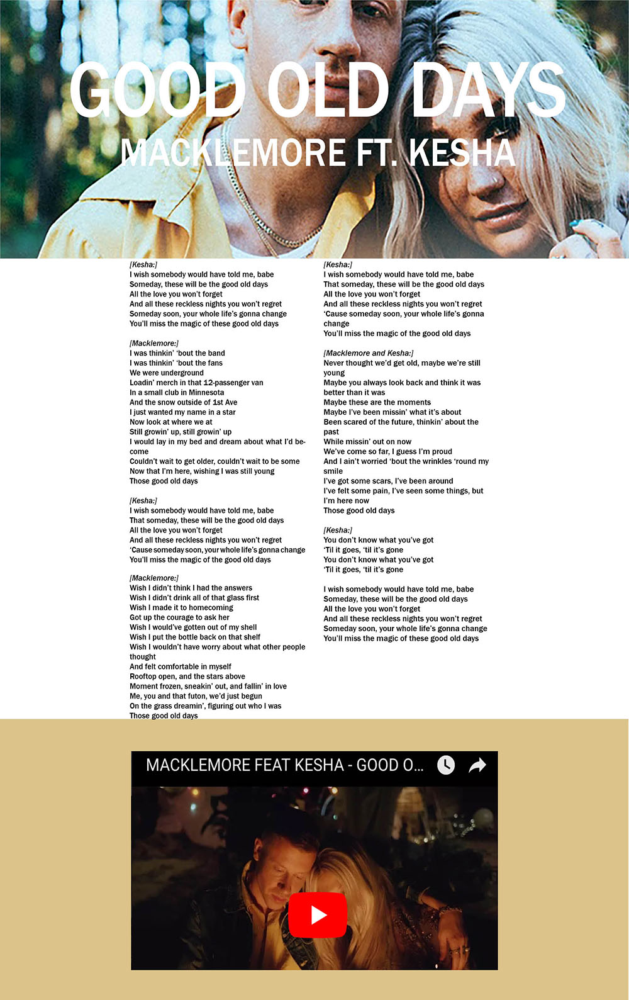

Lyric Sheet Critique
Min Seop Suggested:
1. Increase top and bottom margin in middle section.
2. Increase padding between lyric columns.
3. Match Youtube width to lyrics.
4. Add hover element to choris.
Original:

Revised: